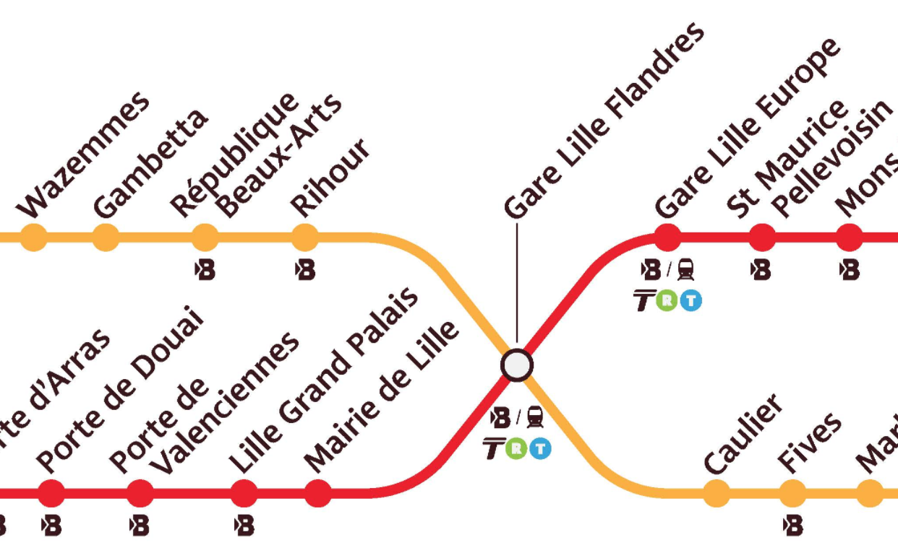

La grappe est un espace de coworking situé à Lille, à proximité de la Place de la République.
75 rue Léon Gambetta
59000 Lille
Contenu masqué par défaut
Les tickets seront en vente prochainement, le prix sera annoncé dès qu'il sera connu.
Les billets comprennent l'accès à tous les évènements de la manifestation, les repas seront vendus séparément sur la même billeterie.
L'hébergement et le transport ne sont pas inclus dans le billet, et sont de la responsabilité des participants.
En cas de difficultés financières, prenez contact avec nous, nous étudierons la situation afin de vous proposer une prise en charge des frais.
Les détails du tutoriel seront partagés avec les participants au cours de l'inscription.
Les présentation le samedi 9 Juin débuteront à 9h du matin, et se poursuivront jusqu'à 18h, avec deux courtes pauses de 10 minutes le matin et l'après-midi, et 1h30 de pause déjeuner à 12h30. Le soir, le repas réunira les convives sur place jusqu'à minuit (et plus si affinités).
Le dimanche, le planning des activités sera moins rigide, les premiers évènements seront aux alentours de 10h, et la journée se cloturera vers 17-18h.
Lille a deux gares TGV situées à quelques minutes à pieds l'une de l'autre, et à 20 minutes à pieds ou 10 minutes en metro du lieu de la conférence. Un TGV Paris-Lille part toutes les demi-heures et prend une heure, un TGV Bruxelles-Lille part toutes les heures et prend 35 minutes. L'Eurostar dessert aussi Lille.
Trouvez votre train via Trainline
L'aéroport de Lille est à Lesquin. Une navette vers Lille-Flandres fait le trajet toutes les heures en 20 minutes pour 8€ (ou 10€ aller-retour). Les détails sont sur la page de Transpole.
La Grappe est située juste à côté de la place de la République, et de la station de metro "République - Beaux- Arts", sur la ligne Jaune, directe depuis Lille Flandres (10 minutes) (1 changement depuis Lille Europe).
Les tickets sont en vente à l'entrée des stations sur des automates, au prix de 1,60€ le ticket. Des pass illimités sont aussi en vente. Tous les détails sur le site de Transpole.
Les lignes Liane 1, Liane 90, Citadine, 12 et 18 desservent l'arrêt "République Beaux-Arts" à quelques minutes de marche de la Grappe.
Pour les tickets, voir la section "Metro"
Les parkings sous-terrains sont listé sur cette page. Ils sont payants. Le parking "République" est très proche de la Grappe.
Vous pouvez aussi laisser votre véhicule en bordure de ville dans un parking relai, qui sera gratuit pour l'achat d'un titre de transport Transpole. Les informations sont sur cette page.